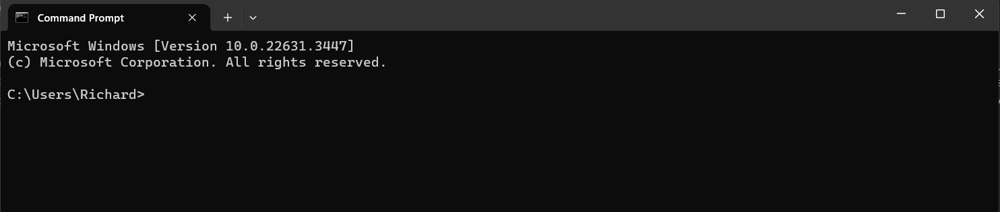

User is expected to have files and directories to delete for this section.
Overview
In this section you will explore how to delete files using the Windows Command Prompt. This section is designed to provide you with the necessary command-line skills to remove files and directories efficiently. While file deletion is a fundamental operation, it's essential to approach it with caution. This guide will not only show you how to execute deletions but also how to verify that you're deleting only what you intend to remove.
Warning
The following section will deletes your files, directories, and also your empty recycle bin!
Open the Command Prompt by pressing Windows Key + R, typing cmd, and pressing
Enter.

Command Prompt window
Find the file, if you know the directory of the file already, you can move to step 4.
Navigate to your desired directory using the cd command for file deletion. If you already know the file name for deleting, try these commands to find location.
C:\[Users]\[user]>dir/s/b[filename]
For example:
C:\Users\Richard>dir /s /b text.txt
Tip
If you only know the first few letters of the file name, do the command below
C:\[Users]\[user]>dir/s/b*[filename]*
For example:
C:\Users\Richard>dir /s /b *tex*
Copy the file location of the address by highlighting the directory using ctrl + c.
For example, if I'm looking for the txt file, only copy the address before the file.
C:\Users\Richard\Downloads\text.txt
I would only copy the bottom portion.
C:\Users\Richard\Downloads\
Navigate to your desired file location using the cd command where you want to delete files.
cd [directory address]
For example:
cdC:\[Users]\[user]\Documents
List the files in a directory before deletion:
dir/b
Delete a single file using the del command:
Warning
The following steps deletes your file! Don't use the command if you
don't want to delete the file!
del[filename].txt
For example:
delfile.txt
Verify that the file has been deleted:
dir/b
Use wildcards to delete multiple files:
Warning
The following steps will delete multiple file! Don't use the command
if you don't want to delete your files!
del*.txt
Remove entire directories using rmdir or rd:
Warning
The following steps will delete directories! Don't use the command if
you don't want to delete your directories!
rmdir/s/qC:\path\to\directory
Secure deletion, we are use a third-party tool like sdelete from Sysinternals:
sdelete-p3filename.txt
Empty the recycle bin via the command line:
Warning
The following steps will empty your recycle bin! Don't use the command
if you don't want to empty your recycle bin!
rd/s/qC:\$Recycle.Bin
Conclusion
At the end of the conclusion, you will learn the following:
✅ How to delete files
✅ How to delete directories
✅ How to empty recycle bin
Good job! 😄 You are now able to delete files, directories and empty recycle bins.